高差消解
用分段台阶和石材边界把坡地转化为可读、可走的抵达路径。
景观设计 · 设计与施工落地
以山地高差为基础，重新组织抵达、行走与停留。项目将台阶、石材、水景与植物串联成一条从建筑入口向自然展开的体验路径。
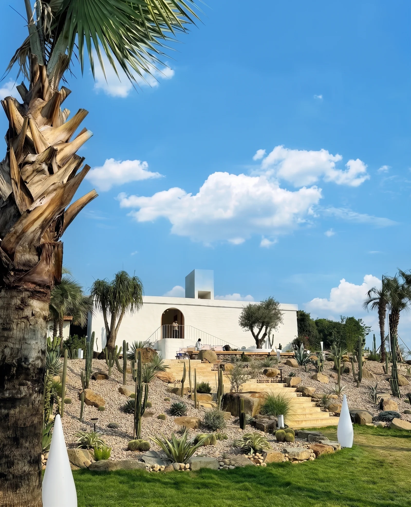
01 / SITE INTENT
设计不是给山地套一层形式，而是把现场已有的高差、路径和自然边界转译成连续的空间体验。
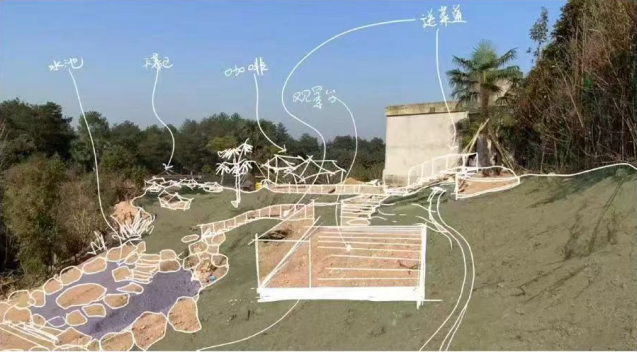
用分段台阶和石材边界把坡地转化为可读、可走的抵达路径。
让建筑入口、花园节点与户外停留不再是孤立的景观片段。
以现场石材、自然植被和低干预构造保持山地环境的连续性。
02 / TRANSLATION
从航拍尺度的分区定位，到局部节点的施工推进，方案在现场不断被校准，而不是停留在效果图里。
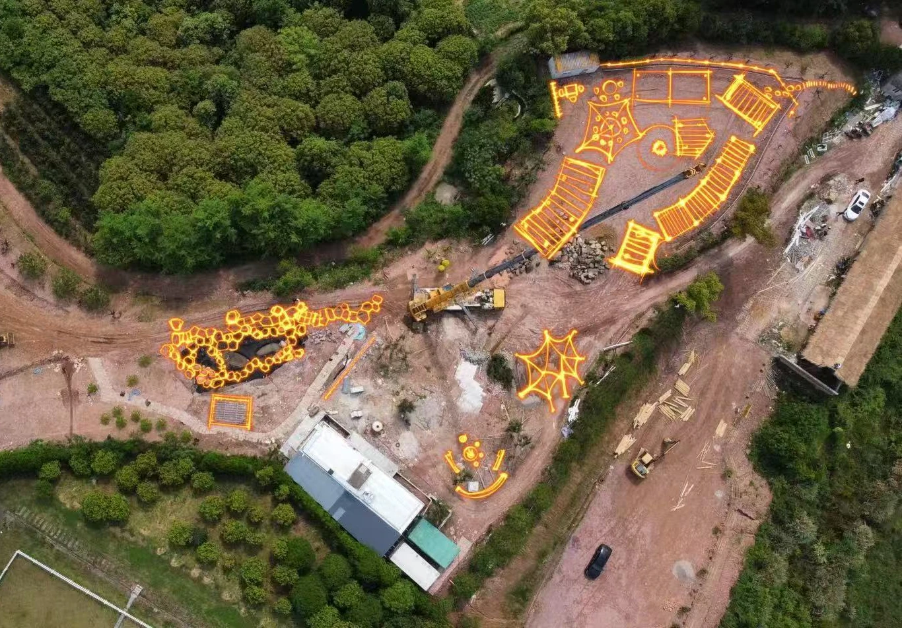
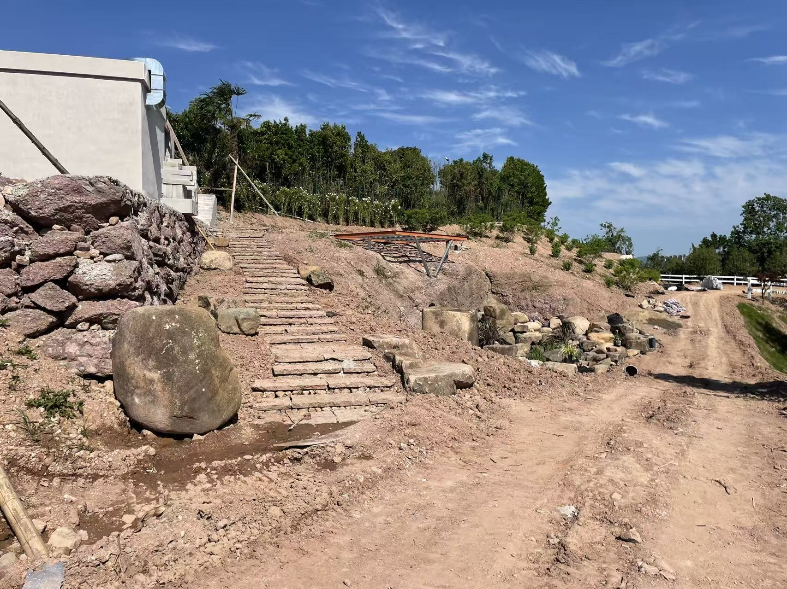
03 / ON SITE
施工记录保留了设计进入现场后的真实状态：地形尚未完成、材料正在就位，空间体验也在逐步显形。
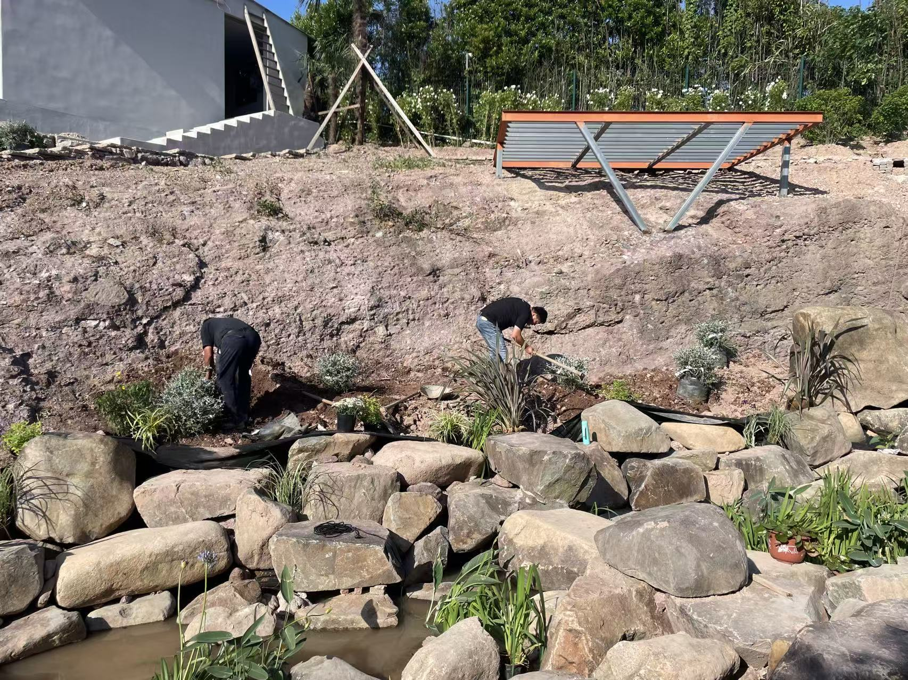
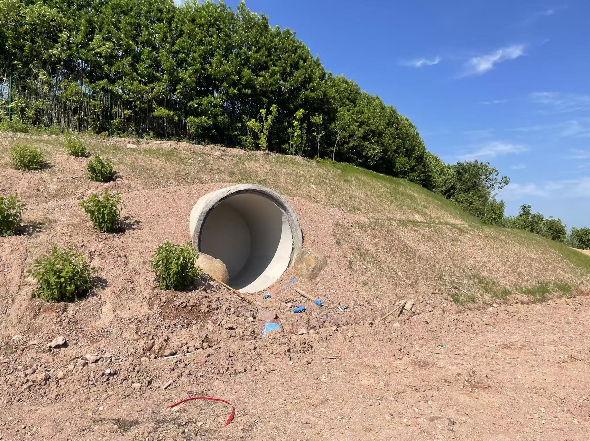
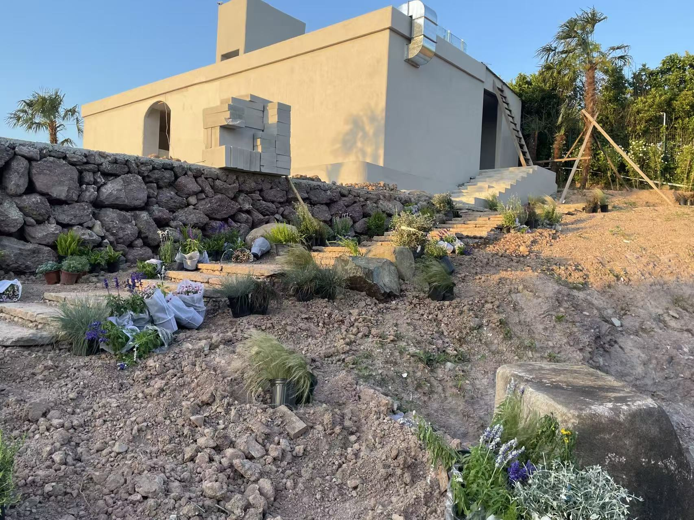
04 / BUILT EXPERIENCE
最终呈现不是单张效果图，而是一段可以被行走、观察和使用的山房景观体验。
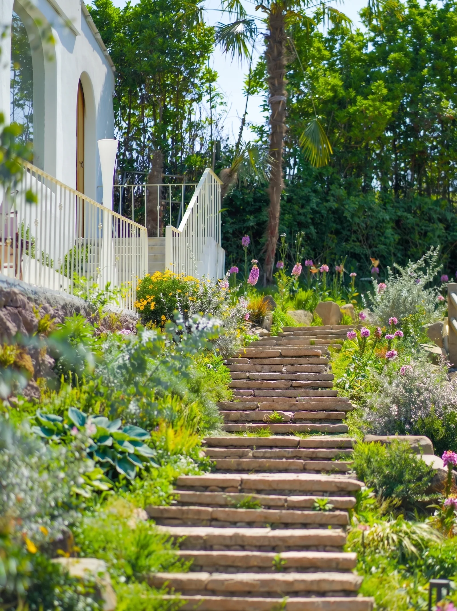
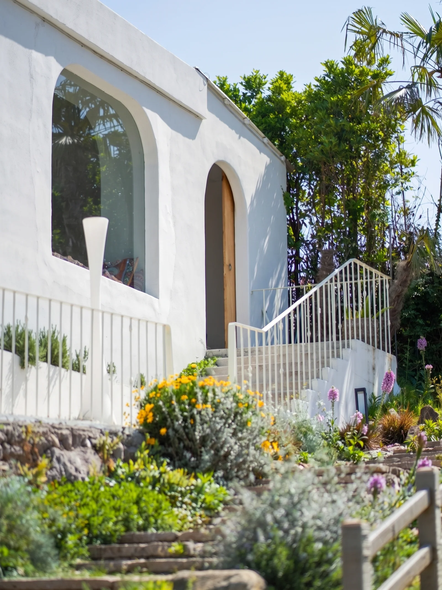
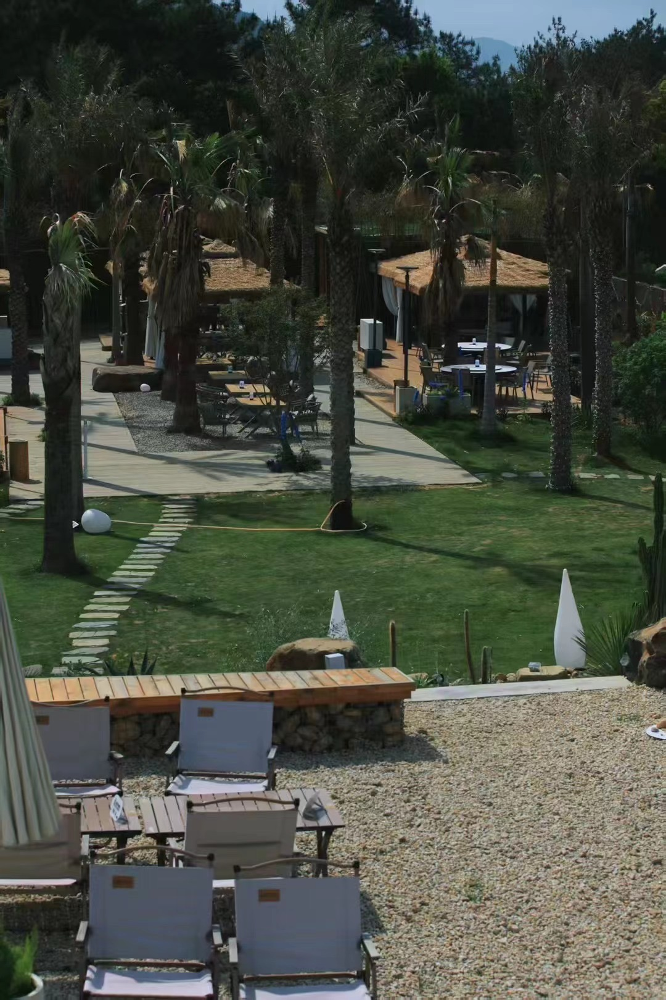
04.2 / DWELLING DETAILS
石材边界、草坡路径与户外座席共同定义了山房的日常使用尺度。
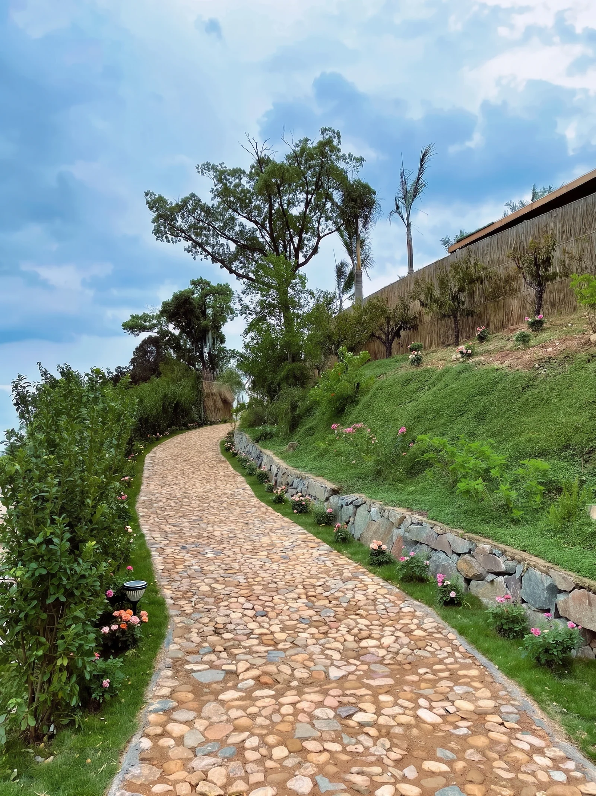
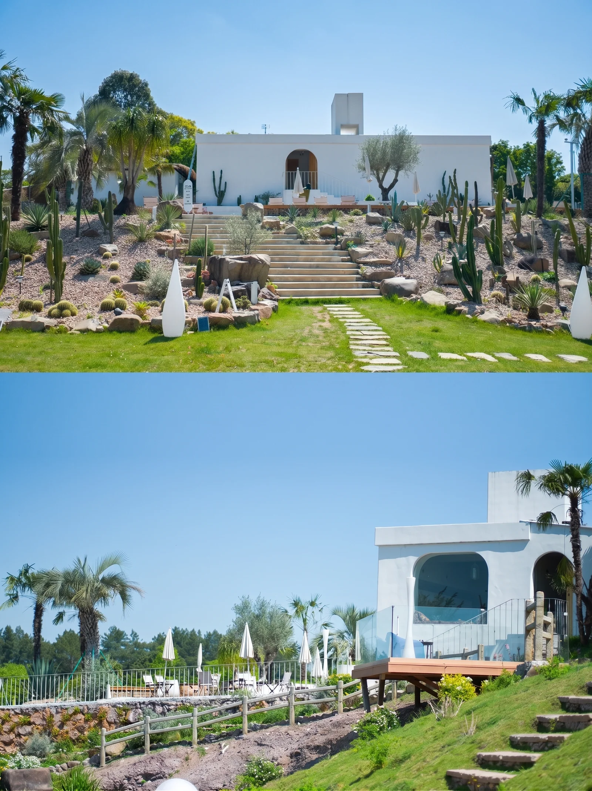
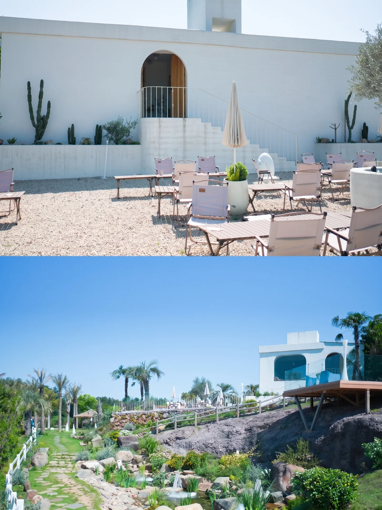
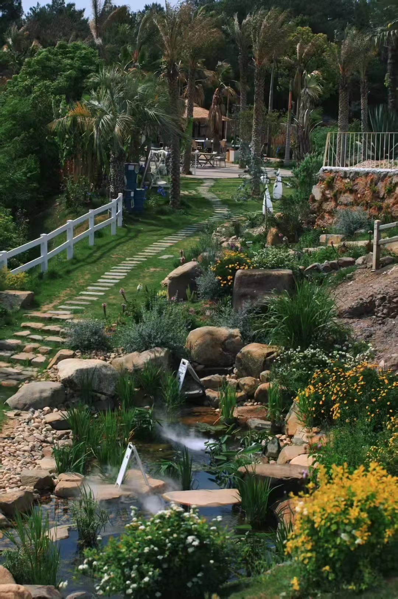
项目以景观介入连接建筑、坡地与日常停留，让山地场地成为可持续使用的度假花园。